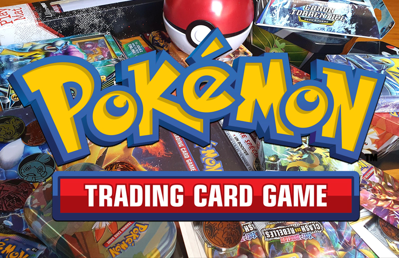
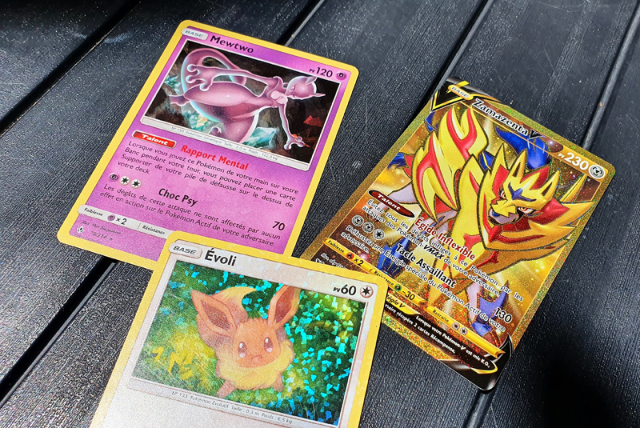
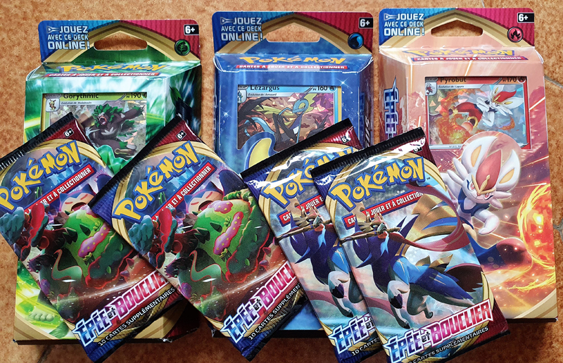
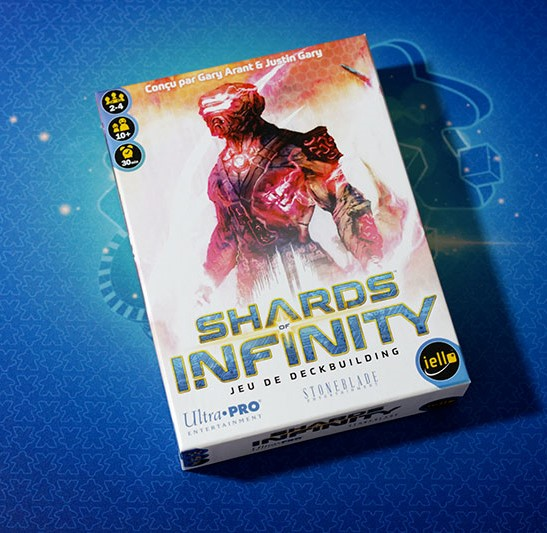
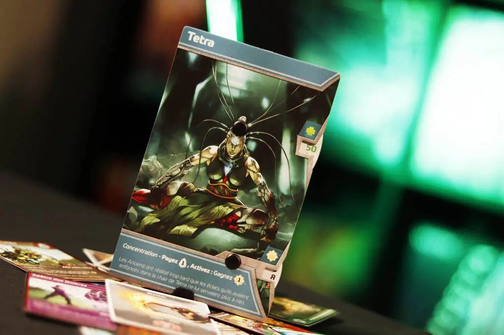
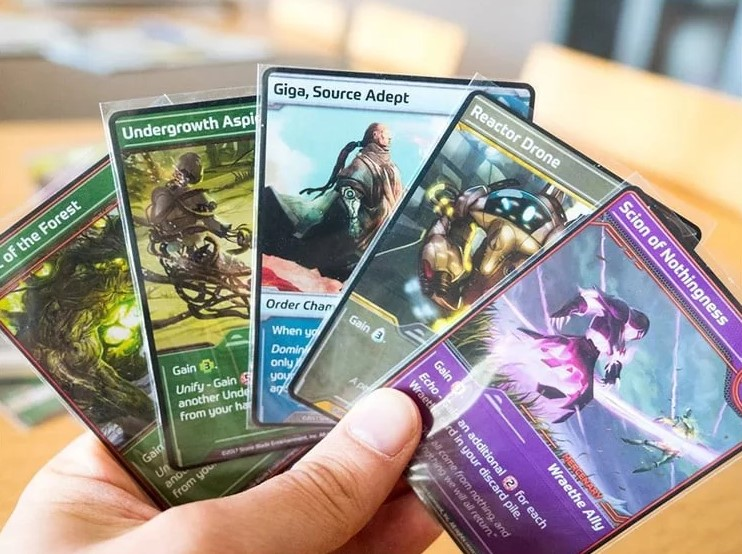
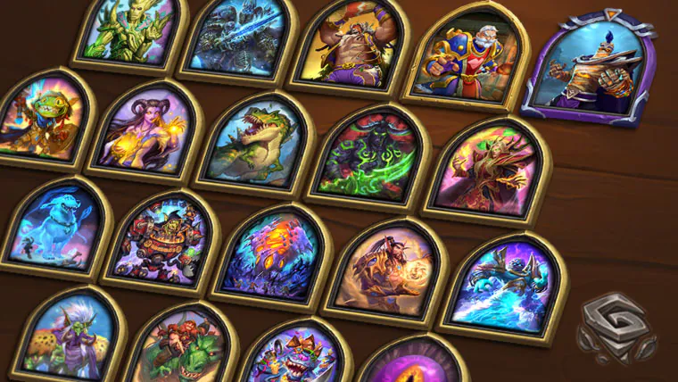
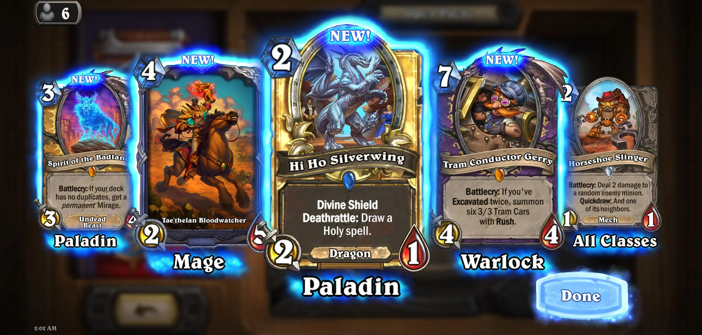

En premier lieu, vous vous en doutiez, voici Pokémon
Créé en 1996 suite au succès des deux premières versions vidéoludiques la même année, le jeu de
cartes Pokémon se propage rapidement comme une traînée de poudre dans le monde entier. Véritable
dictateur dans le milieu du jeu de cartes à collectionner depuis sa sortie, Pokémon est toujours
au sommet de sa catégorie. J'apprécie le système de jeu bien qu'il soit très simpliste, mais je dois
admettre que les aspects les plus intéressants de Pokémon sont la collection et, évidemment,
l'ouverture de Display et Booster.
La surprise à chaque obtention d'une nouvelle carte,
la diversité de créatures tout bonnement invraisemblable (1025 Pokémons en 2025), le plaisir
d'échanger et de comparer ses cartes avec d'autres collectionneurs ainsi que tous les design de
cartes différents, tous ces facteurs rendent le jeu de cartes Pokémon très important pour moi.



Continuons avec Shards of Infinity
Sorti en 2019, ce jeu de deckbuilding opte pour un système stratégique et plus lent. Le deckbuilding
consiste à créer un deck au cours même de la partie, impliquant donc une dimension de réflexion profonde
et de prise de recul. J'adore personnellement ce système et je dois dire que les artistes ayant travaillé
sur le jeu ont réussi à alimenter un univers à cheval entre cyberpunk et post-apo mystique.
Les visuels
impressionnants, les héros apparaissant comme des grandes cartes solides dans lesquelles sont implantées
des roues de points de vie et d'énergie, les parties qui peuvent durer plus d'une heure et bien d'autres
aspects en font un jeu de cartes à posséder. Attention aux alliances contre vous !



Comment conclure sans évoquer celui qui m'a initié à l'amour des cartes ?
Hearthstone, un jeu vidéo, oui. Sorti en 2014 et sûrement numéro 1 du genre aujourd'hui, un jeu de cartes
somme toute classique de collection et d'affrontement, il offre cependant une diversité de contenu incroyable.
Du 1 contre 1 standard au battle royal en passant par un mode solo bien fourni. Hearthstone sait parler à ses
joueurs en apportant des mises à jour régulières avec de nouvelles cartes. Un beau jeu équilibré intégrant énormément
d'animation de cartes.
Ce jeu a tout pour lui, des centaines de cartes, des combinaisons infinies, une
liberté de jeu totale, une direction artistique unique et surtout, des développeurs investis pour un jeu
toujours plus complet et agréable. Je ne pourrais faire autrement que de vous conseiller de vous jeter sur
la création du studio Blizzard les yeux fermés.

